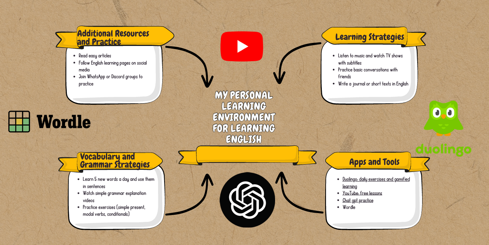

This visual summary represents my comprehensive approach to learning English, combining various strategies, resources, and daily practices that form my Personal Learning Environment.
Additional Resources and Practice
- Bond assay articles - Reading specialized materials to improve comprehension
- Follow English learning pages on social media - For daily tips and updates
- Join WhatsApp or Discord groups to practice - Engaging in conversations with other learners
Learning Strategies
- Listen to music and watch TV shows with subtitles - Improving listening skills through entertainment
- Practice basic conversations with friends - Building speaking confidence in informal settings
- Write a journal or short texts in English - Developing writing skills through regular practice
Vocabulary and Grammar Strategies
- Learn 5 new words a day and use them in sentences - Systematic vocabulary building
- Watch simple grammar explanation videos - Visual learning of complex concepts
- Practice exercises (simple present, modal verbs, conditionals) - Targeted grammar improvement
Apps and Tools
- Duolingo, Dialogs - Gamified learning platforms
- YouTube lessons - Free access to quality English instruction
- Daily practice apps - For consistent skill development
- Word games and flashcards - Making vocabulary acquisition fun
This PLE represents a balanced approach combining structured learning with authentic language use. By integrating these various methods, I can address all language skills (reading, writing, listening, speaking) while keeping the process engaging and relevant to my personal interests.